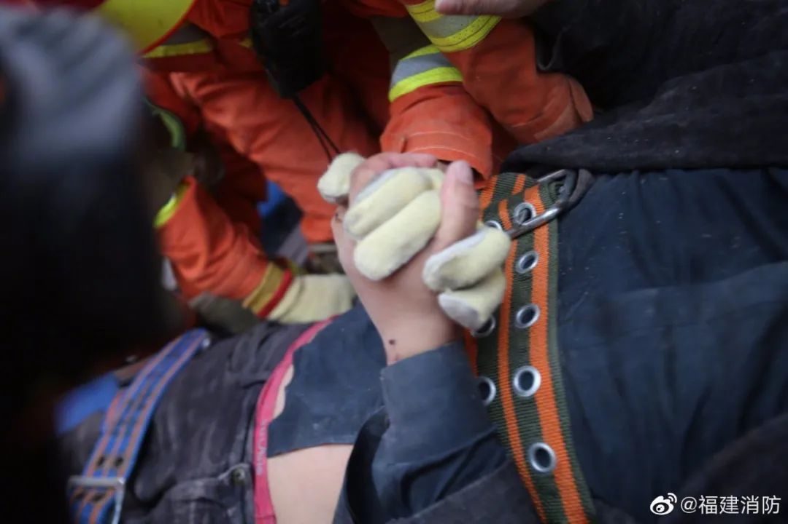
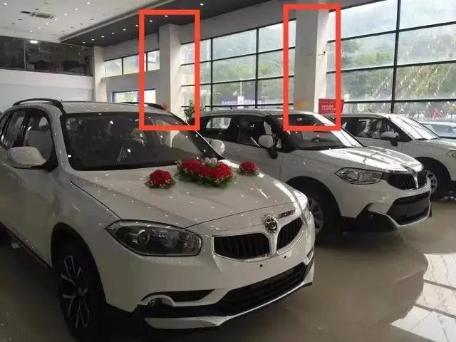
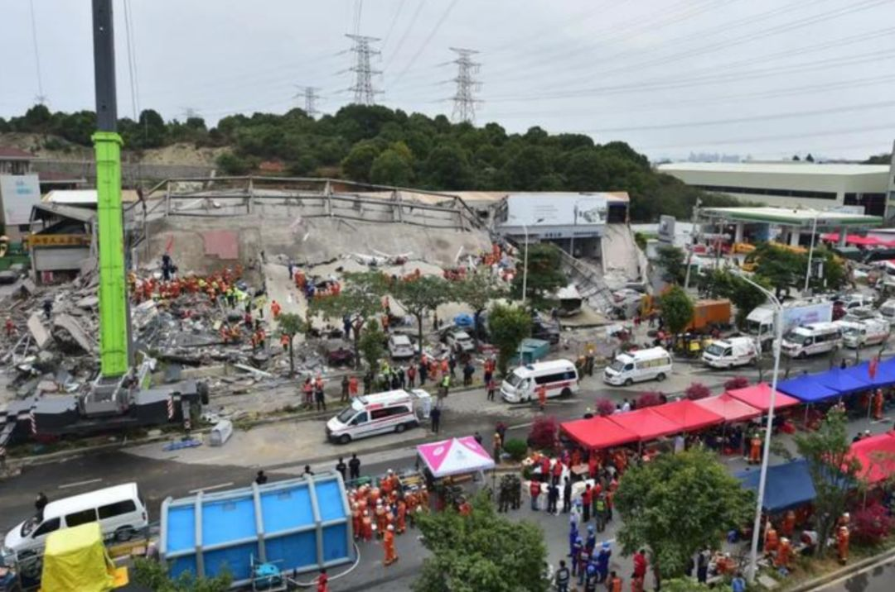

泉州欣佳酒店整栋坍塌，装修期间就曾引发承重担忧
原文链接 备份链接 酒店在装修期间，就曾引发同楼商户对承重能力的担忧。“在酒店装修的那两三个月，因为压力问题，我们一楼商户的门窗玻璃被挤压炸裂五六块，后来觉得房子太危险，我就搬走了。” 记者 | 吴 雪 3月7日，随着莆田、漳州两市11名 …

废墟之上那些只有通透却不能承重的玻璃幕墙，对于那些前来隔离的人们来说，危险已埋伏在墙内。这栋楼的钢结构标准，根本不匹配将来让它运营一家酒店。
记者 | 吴 雪
泉州欣佳酒店坍塌事故发生后的第18个小时，新闻发布会通报最新情况：经初步摸排，事发时大楼内受困人员71人（不含自行逃生9人）截至3月8日16时，已救出48人（其中10人死亡，38人送医治疗），正在搜救的还有23人。

泉州欣佳酒店救援现场
关于事故原因，泉州市鲤城区住建局局长张翼向媒体证实，事发酒店占地5亩，建筑面积约7000平方米，共有7层，属于钢结构房屋。一楼共有6间，其中两间原为超市，春节前该门面房被房主收回开始装修改造。该建筑经查是2013年开始建设，2018年改造为欣佳酒店，并于当年6月开业，酒店有各类客房共计66间。

欣佳酒店事发前外景
3月7日晚上7时许，酒店房主接到现场施工人员电话称，一楼房屋的一根柱子发生变形，三四分钟后楼体整体坍塌。该楼房坍塌是因为装修还是原来结构问题，还需进一步甄别。
泉州市公安局局长李伙金告诉记者，房屋业主杨某某，65岁，为泉州本地人。公安部门已传唤他到案。
截至发稿，救援工作仍在进行。
5小时手动破拆 12岁男孩的妈妈获救
3月7日22点获救的陈先生回忆，事发时，他刚刚洗完澡，身上还裹着浴巾，正准备吃东西，由于当时酒店楼梯坍塌的速度极快，周围扬起了大量灰尘。“人一腾空，酒店的灯全灭了，周围一片漆黑，感觉自己撞到了床上。”
危急时刻，陈先生本能地抓住了床上的枕头，并尽量蜷缩自己的身体，将枕头护住自己的头部。过了一会儿，当楼体不再摇晃后，他尝试着站起来，却发现左腿被东西卡住，“当时我把腿慢慢挪出来，发现在流血，就用身上的浴巾包住了伤口。”陈先生回忆称，周围太黑了，灰尘很多，有点呼吸不过来，他开始一点点扒开旁边的废墟石块。

3月8日早上8点13分，厦门消防救出被困男子，消防员将其抬上了担架
在摸索的过程中，陈先生找到了手机，并与救援人员取得联系，确定了自己的位置。“我左边房间的夫妻被压住了，但感觉伤势不重，可以正常说话，但右边的男士可能受伤比较重，说话说不清楚。”在等待救援时，陈先生与其他伤者互相打气，直到当晚10时许，消防人员把他们救出。

伤者被救出消防员握手打气
而在3月8日的救援过程中，一对母子的安危牵动着大家的心。
3月8日上午9点多，泉州市消防救援支队在坍塌现场某个区域发现一名12岁男孩，当时，男孩意识清醒，还能流利对答。但是由于洞口太小，无法第一时间救出。救援人员一边安慰他，一边开展救援工作。为避免男孩担心，消防人员还给他戴上了眼罩、头盔。
随着一块一块水泥块挖出，一点一点破拆，经过两个多小时的努力，在上午11点25分，男孩被慢慢托举出洞口，随后被送往医院接受治疗。获救后，男孩说的第一句话是：“妈妈在我旁边，还活着。”

据消防人员介绍，13时左右，男孩的妈妈上半身已经出来了，部分身体还被卡住，消防救援人员用矿泉水瓶盖给她喂水。13点30分左右，消防救援人员通过蛇眼生命探测仪进行探测，发现男孩的妈妈的小腿部位被角铁卡住，只能手动破拆救援。经过5个多小时的紧张救援，男孩的妈妈终于被救出。
泉州12岁男孩获救，第一句话让人泪奔
记者还从泉州市温州商会会长刘志康口中了解到，在事故现场有7名温州人被困，包括游绍峰 、金朝荣、薛福平、王映、周成成、潘富明、薛孝德等。目前，金朝荣已被救出，并借了医护人员的手机报了平安。但由于现场做了隔离，不允许进入，暂时不清楚具体救援情况。
泉州市温州商会名誉会长王建胜说，据不完全统计，目前在泉州的温商有1万多人。至于为何在酒店被隔离，一位泉州商会会员柯先生说，他今年回温州过年后返回泉州，被要求居家隔离了。至于为什么7名温州人在酒店隔离，并不清楚原因。柯先生还说，在泉州还有一个隔离点，里面有160到180名温州人，“现在欣佳酒店塌了，我们心慌”。
救援难度大 具体情况未知
据官方消息，此次事故救出的伤员就近送到市第一医院、福建医科大学附属第二医院、市中医院、第910医院等救治。

唐双平(图中)的儿子唐凡事发时在酒店值班，尚无消息
《新民周刊》记者联系上了当地参与救援医院的某位负责人，他告诉记者，事发后，医院共接诊了6个病人，1个重症，目前正在ICU抢救，5个轻症，一般为外伤，并无大碍。这6名伤者包括温州和湖北等地，但具体名单需通过官方途径发布，个人暂不便告知。加之隔离医生的办公室在酒店一层，救援难度大，具体情况未知。

该负责人说，虽然医院并非新冠肺炎定点收治医院，但该医院传染病科室颇有口碑。考虑到疫情管控和隔离人员的特殊性，出诊到现场的医护人员，严格按照三级防护标准。为此医院还专门腾空了一个病区和ICU重症监护室，并开辟急诊绿色通道，收治来自欣佳酒店的坍塌伤者。此外，泉州市中医院的医生告诉《新民周刊》，他们医院收治的是第一批轻伤高楼层伤者，大约有十几人。
根据官方通报信息显示，事发当时，欣佳酒店集中医学观察点共入住重点疫区或有相关旅居史的人员58人，经过核酸检测均为阴性。此外，欣佳酒店还有管理、服务等人员16人，另有租在该栋大楼的车行人员6人。
两次极为短暂的预警
事故的发生，并非毫无预兆。
家住欣佳酒店附近小区的陈女士，就是这次事故的预警者之一。3月7日当晚7时10分，陈女士从外面开车返回家中，途经欣佳酒店时，发现酒店楼上不断有碎玻璃掉下，有的细颗粒，有的大碎片，她感到很奇怪，朝楼上看时听到嘈杂声，以为楼上有人在吵架扔酒瓶。
她把这一异常情况告知了旁边三个穿制服的工作人员，但对方并未在意，也未核实处理。陈女士怕自己的车子被掉下的玻璃砸坏，于是转身回酒店门口检查车子，这时，仍不断有玻璃渣往下掉，但似乎除了陈女士，并没有人发现什么异常。

陈女士回忆，当时往家方向走出二三十米远，就突然听见“轰”的一声巨响，她不确定是地震还是油库爆炸，于是拔腿飞快地往前跑。再回过头时，她看到扬起的满天灰尘，又过了一阵子，她才意识到酒店楼塌了。
“如果当时再迟十几秒，估计自己也跑不掉了，现在想起来非常后怕。”陈女士说，遗憾的是，当时如果工作人员能够对“掉玻璃渣”的情况足够重视，或许就能多挽救几个人的生命。
《新民周刊》记者注意到，另一条预警信息如果也能引起重视，事故损失或许会更小。相关通报称，事故发生前，房主曾接到了现场施工人员电话，称正在进行装修作业的一楼房屋的一根柱子发生变形。但房主并未在意，三四分钟后，楼房整体坍塌。
而一位曾经承租过一楼的4S店员工也说过，开张后的店铺经常有碎玻璃，估计是玻璃受压过重开始爆裂。2017年酒店装修到三楼时，玻璃爆裂更加严重，直到最后他们店内员工发现钢柱变形。

事发前店内柱子已经变形
一位从事建筑行业多年的泉州建筑人士刘浩（化名）认为，这栋楼建筑是钢结构，二楼至六楼没有地板，是空的。钢结构是最结实的，本质上并不存在问题，但改造酒店必然会出现增加墙隔断及结构的调整，比如增添楼板、砌墙，加装修水暖管道等。那么，整栋楼的承载就超了，负载不了那么大的重量，所以才会出现坍塌时楼体整个向前侧倾倒，但整栋楼的结构并未全部损毁。
换句话说，这栋楼的钢结构标准，根本不匹配将来让它运营一家酒店。北京建筑大学设计学院院长王伟在接受采访时表示，和混凝土结构相比，钢结构空间跨度比较大，更适合做商场、厂房，而用作住宅或酒店的话，对技术要求比较高。“混凝土结构空间跨度一般10米左右，钢结构很轻松地就到20米甚至更高。”
掉玻璃渣的酒店为何成为了隔离点
既然早有这些预警，为何欣佳酒店仍然成为了隔离点？刘浩说，酒店附近的这条南环路连接鲤城区和南安市，酒店旁就是县级区的分界线，不到20分钟就能直达泉州西和泉州南高速出入口，以方便快捷为由，将隔离点设置在此处，有其合理性。

欣佳酒店20分钟内可直达泉州高速出入口
此外，刘浩还推测，该地区位置较为偏僻，周围的居民楼较少，加上是独立建筑，疫情期间一楼的商铺也大多未营业，可以防止交叉感染。也是设置为隔离点的原因。但也正因为在欣佳酒店周围，南环路、江南大道和泉南高速两两相交，构成了一片三角地，村民所有的建设用地在这里野蛮生长。

事实上，该楼设计之初就是作为厂房使用的。曾在附近开机械厂的花辰介绍，2012年到2014年间，他的机械厂开在距离300米左右的街对面。据花辰透露，这里很多楼体设计不是正规公司做的，都是一些几个人的小工厂凭经验做。“楼的产权，是村集体用地，承包给私人使用。以前情况不好，就盖个厂房。情况好了，就改成4s店、酒店。发展快了，就从二产变三产了。”
“至于背后是否有其他操作，我这边得到的信息很多，但目前都还未得到证实。”刘浩和所有泉州市民一样还在等待着救援的进展，废墟之上那些只有通透却不能承重的玻璃幕墙，对于那些前来隔离的人们来说，危险已埋伏在墙内。
资料来源 | 新华社、中国新闻网、上游新闻、三联生活周刊


征集令
阳春三月，万物复苏。在抗击疫情的战斗中，我们迎来了春天，《新民周刊》也迎来了新闻线索和故事征集的第二弹。
如今，经历了一个多月休眠的城市正在逐渐苏醒，各行各业都开始有序复工复产。
不论您是企业老板、管理者，还是普通员工；又或者，您是老师、家长，还是学生本人……我们希望了解复工复产复学过程中的困难，或暖心故事。
如果你是抗疫一线的医生护士，疫情期间拍下了珍贵的摄影作品，也欢迎联系我们投稿。
当然，抗击新冠肺炎疫情的相关故事，我们仍然欢迎。
希望广大读者朋友，提供相关线索，说出你的故事，让我们用新闻留存这一切。
《新民周刊》新冠肺炎线索征集值班编辑联系方式（添加时请简要自我介绍）：
周一：应 琛 微信号：paulineying0127
周二：金 姬 微信号：gepetta
周三：黄 祺 微信号：shewen-2020
周四：周 洁 微信号：asyouasyou
周五：孔冰欣 微信号：kbx875055141
周六：吴 雪 微信号：shyshine1105
周日：姜浩峰 微信号：jianggeladandong
✳如你需要捐赠物资，可与以下两位工作人员联系:王勇：WangYong-SH 吴轶君：rommy150708（添加时请注明“捐物资”，方便工作人员快速通过您的申请，谢谢。）
新闻是历史的底稿，你们是历史的见证者。期待你的故事、你的线索！

▼
大家还都在看这些
▼
新民周刊所有平台稿件， 未经正式授权
一律不得转载、出版、改编或进行
与新民周刊版权相关的其他行为，违者必究


原文链接 备份链接 酒店在装修期间，就曾引发同楼商户对承重能力的担忧。“在酒店装修的那两三个月，因为压力问题，我们一楼商户的门窗玻璃被挤压炸裂五六块，后来觉得房子太危险，我就搬走了。” 记者 | 吴 雪 3月7日，随着莆田、漳州两市11名 …
原文链接 备份链接 澎湃新闻记者 钟煜豪 福建泉州鲤城区欣佳酒店楼体坍塌事故发生后，多地紧急展开隔离点安全隐患排查。 据湖北省应急管理厅官网消息，3月7日19时15分，福建泉州市鲤城区常泰街道南环路欣佳快捷酒店发生坍塌事故，为深刻吸取福建 …
原文链接 备份链接 在疫情防控期间，各地酒店纷纷关门，开业不久却两次被行政处罚的泉州欣佳酒店何以能成为疫情防控的集中隔离点？该酒店自2017年就在大楼内多次进行改装，相关手续是否齐全？及时回应这些疑点，有利于缓解公众的担忧 文 |《财经》 …
原文链接 备份链接 记者/曹慧茹 李佳楠 佟晓宇 李东 实习记者/周缦卿 编辑/ 石爱华 宋建华 泉州一七层建筑整体坍塌 3月7日19时15分，泉州市鲤城区一栋大楼发生整体坍塌事故，事故现场共有71人被困（不含自救逃生的9人）。截至3月8 …
原文链接 备份链接 该酒店之前被改造为泉州鲤城区的医学观察点，用以隔离观察密切接触者，事发时被困人数约70人。参与救援的人士表示，现场情况“惨烈”。知情人称，酒店所在建筑曾进行大规模改造 文 |《财经》记者 俞琴 白兆东 鲁伟 编辑 | …